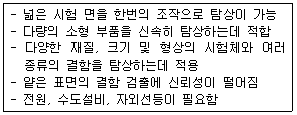
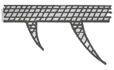
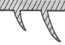
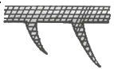
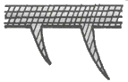

침투비파괴검사기능사 (2006-10-01 기출문제)
1과목: 침투탐상시험법(대략구분)
1. 침투탐상시험에서 유화제의 주된 역할은?
- 형광 색소를 침투액에 첨가시킨다
- 침투액을 물로 씻을 수 있도록 한다
- 건식 현상제가 잘 붙도록 얇은 막을 만든다
- 깊고 미세한 결함 내에 침투액을 빨리 침투시킨다
(정답률: 70%)

2. 초음파탐상시험에 필요한 음향 임피던스를 옳게 나타낸 것은?
- 음향 임피던스 = 초음파의 속도 x 재질의 밀도
- 음향 임피던스 = 초음파의 파장 x 재질의 밀도
- 음향 임피던스 = 초음파의 속도 x 재질의 탄성계수
- 음향 임피던스 = 초음파의 파장 x 재질의 탄성계수
(정답률: 40%)
3. 건식현상법을 염색침투탐상시험에 이용하지 않는 이유는?
- 침투액과 반응하므로
- 대비(contrast)가 나빠서
- 침투액을 과잉으로 빨아내므로
- 가루가 날려서 위생상 나쁘므로
(정답률: 49%)
4. 다음과 같은 침투탐상시험의 특징을 가지고 있는 검사법은 어느 것인가?

- 용제제거성 형광침투탐상검사
- 후유화성 형광침투탐상검사
- 솔벤트 세척형 형광침투탐상검사
- 수세성 형광침투탐상검사
(정답률: 69%)
5. 다음 침투액 중 다른 검사방법에 비해 결함검출도가 가장 높은 방법으로서 특히 깊이가 얕고 폭이 넓은 결함의 검출에 우수한 탐상액은 어느 것인가?
- 수세성 형광침투액
- 후유화성 형광침투액
- 수세성 염색침투액
- 용제제거성 형광침투액
(정답률: 58%)
6. 대비시험편에 균열을 발생시키기 위하여 열처리를 실시한 후의 다음 작업이 가장 효율적인 것은?
- 가열된 시험편을 기름에 담근다
- 가열된시험편을 뜨거운 물에 담근다
- 가열한 시험면에 차가운 물을 흘린다
- 가열된 시험편을 공기 중에 놓아 둔다
(정답률: 69%)
7. 침투탐상시험시 침투제가 가져야 할 특성에 해당되지 않는 것은?
- 미세한 틈 사이에도 침투할 수 있는 능력
- 침투처리시 비교적 큰 결함에도 남을 수 있는 능력
- 침투처리시 재빨리 증발할 수 있는 능력
- 후처리시에 표면으로부터 쉽게 씻겨질 수 있는 능력
(정답률: 81%)
8. 침투탐상시험시 시험 표면의 유지류에 대한 전처리(ore-cleaning) 방법으로 가장 효과적인 방법은?
- 세제 세척
- 산 세척
- 브러싱 세척
- 증기 탈지
(정답률: 54%)
9. 다음 중 방사선투과검사로 검출하기 곤란한 결함은?
- 체적 결함
- 기공성 결함
- 조사방향에 평행한 균열
- 조사방향에 수직하게 깊이 차가 있는 균열
(정답률: 30%)
10. 다음 그림 중에서 유화처리가 가장 잘된것은? (단, 그림의 /// 부분은 침투액을 나타낸 것이며 ## 부분은 침투액과 유화제의 혼합층을 나타낸 것이다 )




(정답률: 66%)
11. 침투탐상시험으로 시험면이 개방되지 않은 시험체의 표면 아래 불연속을 검출하려 한다. 다음 중 옳은 설명은?
- 후유화성 형광침투액을 사용한다
- 가시성 염색침투액으로 검사한다
- 수세성 형광침투액으로 검사한다
- 침투탐상시험으로는 검출하기 어렵다
(정답률: 56%)
12. 형광침투탐상시험에서 자외선등은 어떤 목적 때문에 사용하는가?
- 침투제가 형광을 발하게 하기 위해서
- 침투제의 모세관현상을 도와주기 위해서
- 표면의 과잉침투제를 중화시키기 위해서
- 탐상부분의 표면장력을 줄이기 위해서
(정답률: 91%)
13. 침투액의 침투성은 탐상면에 대하여 어떤 물리적 현상을 이용한 것인가?
- 밀도와 끓는점
- 점성
- 표면장력과 적심성
- 상대적 무게
(정답률: 83%)
14. 전원 공급이 어려운 야외에서 침투탐상시험을 행할 때 휴대에 필요한 재료 및 장비로 알맞은 것은?
- 세척제, 형광침투제, 현상제, 자외선등
- 세적체, 염색침투제, 현상제, 걸레
- 세척제, 후유화성침투제, 현상제, 자외선등
- 세척제, 수세성 형광침투제, 유화제, 걸레
(정답률: 68%)
15. 자외선등에 대한 자외선강도를 측정할 때 탐상면과 자외선등 사이의 거리는 얼마의 간격을 두고 측정 하는가?
- 18 cm
- 38 cm
- 48 cm
- 62 cm
(정답률: 69%)
16. 다음 중 의사지시모양(무관련 혹은 비관련 지시모양)은 현상제를 적용한 면에 어떤 것이 남아있을 경우 나타날 가능성이 가장 높은가?
- 침투액
- 세척액
- 유화액
- 트리클렌
(정답률: 69%)
17. 침투탐상시험에서 일반적으로 현상제를 백색으로 사용하는 주된 이유는?
- 침투액과 혼합이 용이하기 때문에
- 백색이 모든 색의 기본이기 때문에
- 침투액과의 색 대비 효과를 높이기 때문에
- 자외선등의 파장을 증가시키기 때문에
(정답률: 69%)
18. 모세관 현상은 액체가 작은 틈으로 채워져 들어가는 현상을 이용한 것이다. 이러한 작용은 어떤 원리에 기인되는가?
- 화학평형
- 전자기력
- 분자인력
- 정전현상
(정답률: 69%)
19. 형광침투탐상시험과 비교할 때 염색침투탐상시험의 장점으로 옳은 것은?
- 자연광에서 검사가 용이하고 장비의 사용이 간편하다
- 형광침투탐상시험보다 미세 균열의 검출이 우수하다
- 형광침투제보다 침투력이 뛰어나다
- 형광침투제는 독성인 반면 염색침투제는 독성이 없다.
(정답률: 72%)
20. 수세성 침투액은 시험편 표면에서 닦아낸 후 시험편을 건조시켜야 하는데 이 때 건조온도는 250℉를 넘지 않아야 한다. 그 주된 이유는 무엇인가?
- 시험편의 온도가 250℉ 를 넘으면 검사할 결함이 없어지기 때문이다.
- 250℉ 이상이면 결함부위에 침투했던 과량의 침투액이 빠져 나오기 때문이다.
- 250℉를 넘으면 침투액이 손상되어 탐상감도가 낮아 지기 때문이다.
- 250℉ 이상으로 가열하면 유독가스가 발생하기 때문이다.
(정답률: 69%)
2과목: 침투탐상관련규격(대략구분)
21. 비파괴검사를 수행하여 얻는 효과와 거리가 먼 것은?
- 생산기술의 향상
- 제품의 신뢰성 증가
- 작업 공정의 자동화
- 제품의 안전성 확보
(정답률: 75%)
22. 다음 중 침투탐상시험을 적용하기 곤란한 부품은?
- 다공성 물질로 만든 부품
- 알루미늄 단조물
- 플라스틱 제품
- 주강품
(정답률: 79%)
23. 침투탐상시험에서 전처리시 초음파 세척은 다음 중 어느 경우에 주로 이용되는가?
- 대형 부픔의 부분 세척을 위하여 이용된다.
- 유화제를 제거하기 위하여 이용된다.
- 정교한 부품의 세척을 위하여 이용된다.
- 자외선등의 표면을 깨끗이 청소하기 위하여 이용된다.
(정답률: 60%)
24. 다음 결함 중 발생 생성 요인이 다른 것은?
- 텅스텐 혼입
- 고온 균열
- 용입 부족
- 콜드 셧
(정답률: 59%)
25. 다음 중 후유화성 염색침투탐상시험과 무관한 재료 또는 기구는?
- 자외선등
- 유화제
- 현상제
- 분사노즐
(정답률: 59%)
26. 침투탐상 시험방법 및 침투지시모양의 분류(KS B 0816)에 규정된 A형 대비시험편에 대한 설명으로 잘못된 것은?
- PT-A의 기호로 표시한다.
- 재료는 A2024로 한다.
- 제작시 가열은 분젠버너로 한다.
- 한쪽 면만 흐르는 물에 급냉시켜 갈라지게 한다.
(정답률: 40%)
27. 침투탐상 시험방법 및 침투지시모양의 분류(KS B 0816)에 의한 침투지시모양을 3종류로 분류할 때 이것에 해당되지 않은 것은?
- 의사침투지시모양
- 독립침투지시모양
- 연속침투지시모양
- 분산침투지시모양
(정답률: 75%)
28. 침투탐상 시험방법 및 침투지시모양의 분류(KS B 0816)에서 현상방법을 분류할 때 기호 N이 의미하는 것은?
- 건식현상제를 시용하는 방법이다.
- 속건식현상제를 사용하는 방법이다.
- 습식현상제를 사용하는 방법이다.
- 현상제를 사용하지 않는 방법이다.
(정답률: 73%)
29. 항공 우주용 기기의 침투탐상 검사방법(KS W 0914)에 따라 사용 중인 침투액에 대하여는 규정된 점검을 통해 성능이 불만족할 때는 침투액을 교환하든지 시정조치를 취해야 한다. 다음 중 용제 제거성 형광침투액의 성능 점검 사항에 해당하는 것은?
- 형광휘도와 제거성
- 형광휘도와 감도
- 수분함유량과 제거성
- 수분함유량과 감도
(정답률: 40%)
30. 비파괴검사-침투탐상검사 일반원리(KS B ISO 3452)에 규정한 최대 표준현상시간은 보통 침투 시간의 몇 배인가?
- 1.1배
- 1.2배
- 1.5배
- 2배
(정답률: 56%)
31. 침투탐상 시험방법 및 침투지시모양의 분류(KS B 0816)에서 A형 대비시험편을 제조하기 위하여는 판의 한면 중앙부를 몇 도 정도로 가열하여, 가열 한 면에 흐르는 물을 뿌려 급냉시켜 갈라지게 하는가?
- 300 ~ 310℃
- 440 ~ 450℃
- 520 ~ 530℃
- 750 ~ 760℃
(정답률: 62%)
32. 침투탐상 시험방법 및 침투지시모양의 분류(KS B 0816)에 규정된 시험기록 사항 중 시험시의 온도에 대한 설명으로 올바른 것은?
- 시험 장소에서의 침투액의 온도가 15 ~50℃ 일 때의 온도를 반드시 기록하여야 한다.
- 시험 장소에서 기온이 15℃이하 또는 50℃이상일 때의 온도를 반드시 기록하여야 한다.
- 시험 장소에서의 기온이 25 ~ 40℃ 일 때의 온도를 반드시 기록하여야 한다.
- 시험 장소에서 기온이 20℃ 이상 또는 45℃ 이상일 때의 온도를 반드시 기록하여야 한다.
(정답률: 77%)
33. 침투탐상 시험방법 및 침투지시모양의 분류(KS B 0816)에 의한 속건식 현상제를 적용하는 방법으로 가장 적합한 것은?
- 현상제 속에 시험품을 침지시킨다.
- 속건식이므로 같은 곳에 여러번 반복 도포한다.
- 분무를 이용하여 얇고 균일하게 도포한다.
- 붓으로 여러번 반복하여 두껍게 칠한다.
(정답률: 67%)
34. 침투탐상 시험방법 및 침투지시모양의 분류(KS B 0816)에 의하여 침투액의 표준침투시간을 5 ~ 10분 으로 할 수 있는 시험체와 침투액의 적정온도 범위는?
- 3℃이하
- 3 ~ 15℃
- 15 ~ 50℃
- 50℃이상
(정답률: 79%)
35. 침투탐상 시험방법 및 침투지시모양의 분류(KS B 0816)에 규정된 분류기호 중 “VC-S"에서 C가 의미 하는 내용은?
- 현상액을 의미한다.
- 잉여 침투액의 제거방법을 의미한다.
- 침투액을 의미한다.
- 침투탐상시험의 건조처리 방법을 의미한다.
(정답률: 75%)
36. 침투탐상 시험방법 및 침투지시모양의 분류(KS B 0816)에서 침투액의 침투시간을 결정하는 인자와 거리가 먼 것은?
- 현상 처리시간
- 시험체의 재질
- 예상 결함의 종류
- 침투액의 종류
(정답률: 61%)
37. 침투탐상 시험방법 및 침투지시모양의 분류(KS B 0816)에 규정된 시험에 대한 내용을 기록서에 작성할 때 시험체에 대하여 기재할 내용에 포함되지 않는 것은?
- 시험체의 품명
- 시험체의 재질
- 시험체의 치수
- 시험체의 무게
(정답률: 74%)
38. 침투탐상 시험방법 및 침투지시모양의 분류(KS B 0816)에 따른 분류기호 “FB-W"의 시험절차로 옳은 것은?
- 침투처리 → 전처리 → 유화처리 → 물세척처리 → 건조처리 → 건식현상처리 → 관찰 → 후처리
- 전처리 → 침투처리 → 유화처리 → 물세척처리 → 습식현상처리 → 건조처리 → 관찰 → 후처리
- 전처리 → 침투처리 → 유화처리 → 물세척처리 → 건조처리 → 건식현상처리 → 관찰 → 후처리
- 전치리 → 침투처리 → 물세척처리 → 유화처리 → 습식현상처리 → 건조처리 → 관찰 → 후처리
(정답률: 56%)
39. 수세성 형광 침투액을 사용하고 습식 현상제를 적용하는 경우는 “침투탐상 시험방법 및 침투 지시 모양의 분류(KS B 0816)”에서 어떤 분류 기호를 표시하는가?
- FB-W
- FC-S
- FA-W
- FA-D
(정답률: 53%)
40. 침투탐상 시험방법 및 침투지시모양의 분류(KS B 0816)에서 전수검사에 의해 합격한 시험체에 표시를 하는 방법으로 올바른 것은?
- 각인, 부식 또는 착색으로 시험체에 0의 기호를 표시
- 각인, 부식 또는 착색으로 시험체에 p의 기호를 표시
- 황색으로 착색하여 시험체에 p의 기호를 표시
- 황색으로 착색하여 시험체에 0의 기호를 표시
(정답률: 75%)
3과목: 금속재료일반 및 용접일반(대략구분)
41. 우리나라에서 인터넷 주소를 관장하는 곳은?
- http://www.apnic.net
- http://www.krnic.net
- http://www.ispnic.net
- http://www.internic.net
(정답률: 35%)
42. 인터넷에서 외부 네트워크로부터 내부 네트워크의 정보를 보호하기 위해서 설치하는 시스템은?
- lifewall
- router
- hub
- bridge
(정답률: 38%)
43. 인터넷에서 흔히 접할 수 있는 하이퍼텍스트 문서를 작성할 때 사용되는 언어는?
- WWW
- HTML
- HTTP
- FTP
(정답률: 25%)
44. 은행의 온라인 거래처럼 데이터의 발생과동시에 통신회선을 통해 즉시 처리하는 시스템으로 가장 적당한 것은?
- 일괄 처리 시스템
- 실시간 시스템
- 다중 처리 시스템
- 시분할 시스템
(정답률: 43%)
45. 운영체제(operating system)가 하는 일이 아닌 것은?
- 데이터 관리
- 스케줄 관리
- 파일 관리
- 컴파일
(정답률: 42%)
46. 온도의 변화에 따라 선팽창 계수나 탄성률 등의 변화가 없는 불변강이 아닌 것은?
- 인바
- 엘린바
- 슈퍼인바
- 스테인리스강
(정답률: 65%)
47. 시험체 표면에 딱딱한 물체를 낙하시켜 튀어 오르는 높이로 측정하여 사용하는 경도기는?
- 쇼어 경도기
- 비커즈 경도기
- 로크웰 경도기
- 브리넬 경도기
(정답률: 40%)
48. 상온에서 면심입방격자로만 구성되어 있는 것은?
- Be, Fe, Cr
- Co, Zn, Mo
- Ai, Cu, Ag
- Cd, Ta, Mg
(정답률: 53%)
49. 금속의 변태점을 측정하는 방법이 아닌 것은?
- 비열법
- 열 팽창법
- 자기탐상법
- 전기 저항법
(정답률: 35%)
50. 상온에서 비중이 약 1.74인 금속은?
- Zn
- Hg
- Sn
- Mg
(정답률: 70%)
51. 수은을 제외한 금속재료의 알반적 성질을 설명한 것 중 옳은 것은?
- 합금의 전기 전도율은 순수한 금속보다 좋다.
- 순수한 금속일수록 열전도율은 떨어진다.
- 금속은 상온에서 결정체이다.
- 이온화 경향이 작은 금속일수록 부식되기 쉽다.
(정답률: 43%)
52. 탄소강 중에 포함되어 있는 망간의 영향으로 틀린 것은?
- 고온에서 결정립 성장을 억제시킨다.
- 주조성을 좋게 하고 황의 해를 감소시킨다.
- 강의 담금질 효과를 저감시켜 경화능을 작게한다.
- 강의 연신율은 거의 감소시키지 않고 강도, 경도, 인성을 증가시킨다.
(정답률: 44%)
53. 다음 중 강 자성체가 아닌 것은?
- 철
- 코발트
- 금
- 니켈
(정답률: 72%)
54. Au의 순도를 나타내는 단위는K(carat)이다. 이 때 18K로 표시된 금의 순도는 몇 %인가?
- 55
- 65
- 75
- 85
(정답률: 52%)
55. 다음 중 절삭성을 향상시킨 특수 황동은?
- 납 황동
- 철 황동
- 규소
- 주석 황동
(정답률: 53%)
56. 베이나이트 조식은 강에 어떤 열처리를 함으로서 얻을 수 있는가?
- 풀림 처리
- 담금질 처리
- 뜨임 처리
- 항온 변태 처리
(정답률: 55%)
57. 공정 반응에서 많이 나타나며 정출된 두 금속 A,B가 층상의 형태를 이루는 것을 어떤 구조라고 하는가?
- 라멜라 구조
- 전위 구조
- 핫티어 구조
- 라미네이션 구조
(정답률: 12%)
58. 점용접 조건의 3요소가 아닌 것은?
- 전류의 세기
- 통전시간
- 너켓
- 가압력
(정답률: 87%)
59. 일반적인 서브머지드 용접의 특징 설명으로 틀린 것은?
- 용입이 깊다.
- 비드의 외관이 매우 아름답다.
- 곡선 용접이 능률적이다.
- 용융속도 및 용착속도가 빠르다.
(정답률: 35%)
60. 다음 용접 결함의 종류 중 구조상의 결함이 아닌 것은?
- 기공
- 슬래그 혼입
- 균열
- 인장강도 부족
(정답률: 61%)